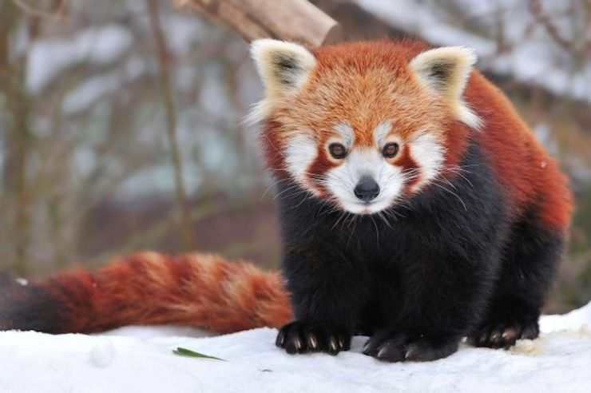

Логотип Firefox
В Гималаях (юго-западный Китай) живет малая панда (красная панда). В английском языке её называют «Firefox». Это слово вдохновило создателей популярного браузера... Вот только на логотип они почему-то поместили красную лису, а не панду.
Брендан Айк
Разработчик JavaScript. Этот язык считается одним из стандартов в WEB-программировании. Принимал участие в создании компании Mozilla и браузера Firefox. Занимал пост СЕО. Уволился после скандала, связанного с его позицией по вопросам гей-браков (Брендан – активный участник движения за их запрет в Калифорнии).
Firefox

© Хмара Анастасия Михайловна